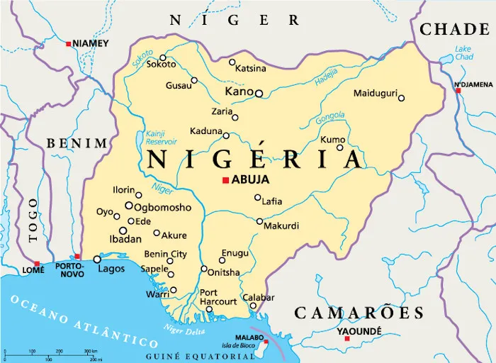
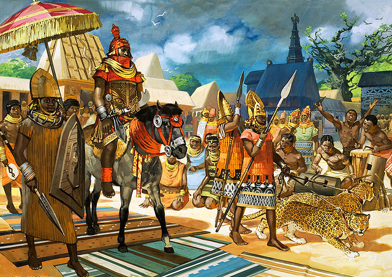
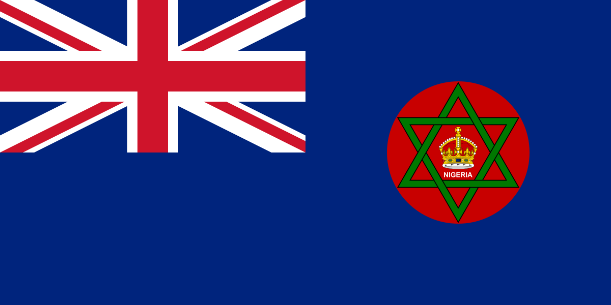
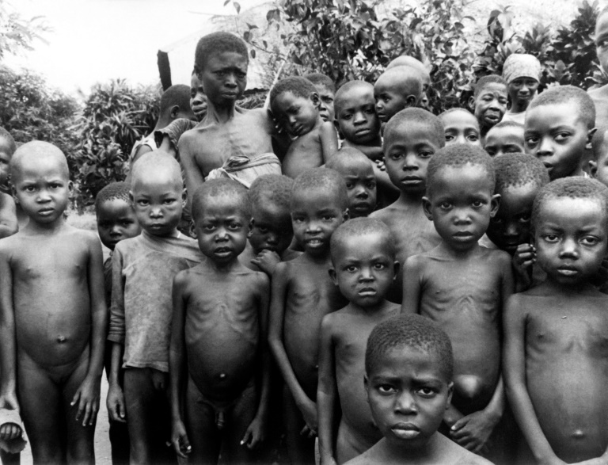
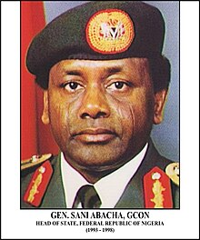

history
introdução

A história da Nigéria é milenar e marcada pela civilização Nok, povo que ocupava o território do país.
Essa civilização e outras, como os bantos e os ibos, eram importantes grupos populacionais da Nigéria,
e se organizavam por meio de reinos, praticando atividades como a agricultura e o artesanato.
Antes de 1500

Em 800 a.C., Noque funda a primeira sociedade organizada na região. Pelo ano 1000,
o Império de Canem era o principal Estado que se enriquecia com o comércio transaariano.
Entre os séculos XV e XIX, comerciantes europeus estabeleceram portos costeiros para
o aumento do tráfico de escravos para a América. O comércio de comódites substituiu
o de escravos no século XIX. Em 1992 foi iniciada a produção de petróleo.
Bem antes de 1500, muito do que seria a "Moderna Nigéria" era dividida em Estados que caracterizam os grupos
étnicos existentes até hoje. Desses antigos Estados é possível aferir histórias
em comum e independentes dos Reinos de Iorubás, de Ibos, Benim, de Hauçás,
de Nupés e Império de Canem e Bornu que deram base ao que no século XX seria a Nigéria.
Período pré-colonial (1500–1800)

A história dos territórios desde 1 900 a.C.. As escavações arqueológicas passadas descobriram o estilo de vida
bastante avançado de algumas das civilizações hauçás. Alguns conseguiram
trabalhar em ferro que ajudaram na fabricação de ferramentas e armas.
Eles também mostraram um vasto avanço na expressão cultural que era raro para
as civilizações na área ao redor desse tempo. Muitos dos assentamentos também
continham paredes de pedra habilmente percorridas que mostraram a necessidade
de qualquer proteção de animais ou outros assentamentos. Esses vários assentamentos
mais tarde entrariam em conflito, desejando um aumento de poder que poderia explicar
esses elementos descobertos nos sítios arqueológicos.
Nigéria colonial (1800–1960)

A Nigéria Colonial é referente à área da África Ocidental, que se tornou a atual Nigéria,
durante o tempo do domínio britânico nos séculos XIX e XX. A influência britânica começou
com a proibição de comércio de escravos para súditos britânicos em 1807.
O colapso resultante do tráfico de escravos africanos levou ao declínio e
eventual colapso do Império Edo. O Reino Unido anexa Lagos em 1861 e estabelece
o Protetorado de Oil River em 1884. A influência britânica na área do Níger
aumentou gradualmente ao longo do século XIX, mas o Reino Unido não ocupou
efetivamente a área até 1885. Outras potências europeias reconheceram o poder
deste sobre a área na Conferência de Berlim neste ano.
De 1886 a 1899, grande parte do país foi governado pela Royal Niger Company
e por George Taubman Goldie[1]. Em 1900, os protetorados Sul e Norte da
Nigéria passaram da empresa às mãos da Coroa. Por insistência do governador
Frederick Lugard, os dois territórios foram amalgamados como Colônia
e Protetorado da Nigéria, mantendo uma considerável autonomia
regional entre as três grandes regiões. Constituições
progressistas após a Segunda Guerra Mundial foram
fornecidas para aumentar a representação
e governo eleitoral pelos nigerianos.
O período colonial adequado na Nigéria
durou entre 1900 e 1960, depois disso esta ganha sua independência.
Primeira República (1960–1979)

A Nigéria obteve a independência da Grã-Bretanha em 1 de outubro de 1960,
e declarou-se uma república três anos depois em 1 de outubro 1963.
A constituição e o Sistema Westminster de governo foram herdados dos colonialistas britânicos.
O país foi dividido em três regiões geopolíticas — Região Oeste, Região Leste e Região Norte
— e seus partidos políticos adotaram as identidades e ideologias de cada região.
O Partido Popular do Norte (NPC)
predominantemente representando os interesses dos hauçás /
fulas da Região Norte, o Conselho Nacional da Nigéria e Camarões (NCNC)
(depois renomeado para Conselho Nacional dos Cidadãos Nigerianos)
predominantemente representa os ibos da Região Leste, e o Grupo Ação (AG)
domina os iorubás da Região Oeste. O NPC assumiu o controle do parlamento federal,
e formaram uma coligação governamental com o NCNC. Ahmadu Bello, líder do NPC,
estava preparado para se tornar o primeiro-ministro, mas em vez disso ele escolheu se tornar o
Premier da Região Norte, e apoiou a candidatura para primeiro-ministro do seu deputado Tafawa Balewa.
Guerra Civil (1967–1970)

A Guerra Civil da Nigéria, também conhecida como Guerra Civil Nigeriana,
Guerra Nigéria-Biafra ou ainda Guerra do Biafra que durou de 6 de julho de 1967 a 13
de janeiro de 1970, foi um conflito político causado pela tentativa de separação das
províncias ao Sudeste da Nigéria, como a República autoproclamada do Biafra.
Teve início após uma desavença entre os povos Hauçás e Ibos. Hauçás eram muçulmanos originários do norte
do país e viviam em um sistema semifeudal. Os Ibos eram considerados a elite nigeriana, possuíam
melhores cargos no governo central e melhores salários, e provinham das
tribos ao leste. Em 1966, soldados da etnia Ibo tomaram o poder
no país em um golpe de estado. No entanto, os Hauçás tomaram
o poder seis meses depois em um contragolpe e iniciaram um massacre aos
Ibos em todo país. Estima-se que cerca de 30 000 Ibos tenham sofrido
nesse primeiro ataque. Os sobreviventes se refugiaram nas terras ao
leste e proclamaram a República de Biafra. Embora as tensões culturais,
étnicas e religiosas tenham sido alguns dos principais instigadores do
conflito, a questão econômica acabou sendo um dos fatores mais importantes,
com o controle do Delta do Níger (região rica em recursos naturais, como petróleo)
tendo um significado estratégico gigantesco. Com apenas um ano de guerra, tropas
do governo federal nigeriano tinham Biafra completamente sob cerco, capturando as
instalações de petróleo da costa e a cidade de Porto Harcourt. Com o conflito se
alastrando num impasse, o bloqueio imposto pelo governo nigeriano levou a uma fome
em massa. Durante a guerra, mais de 100 mil baixas foram reportadas entre
forças militares devido a inanição, com entre 500 000
e 2 milhões de civis da região de Biafra morrendo devido à falta de comida.
consequências da guerra

Em meados de 1968, imagens de crianças malnutridas sofrendo com a fome chegaram as mídias ocidentais.
A comunidade internacional se dividiu com relação ao conflito.
Os Estados Unidos, o Reino Unido e a União
Soviética apoiavam o governo central nigeriano,
enquanto França, Israel e China apoiavam a República de Biafra.
A guerra acabou em janeiro de 1970, após uma ofensiva de três
semanas do exército nigeriano. O presidente de Biafra, Odumegwu
Ojukwu, partiu para o exílio e a resistência armada se desfez após a tomada de Owerri por tropas nigerianas.
A guerra expôs falhas no movimento pan-africano na era inicial de
independência africana do colonialismo europeu, fornecendo,
de acordo com algumas análises, evidências de que os povos
da África eram supostamente diversos demais para encontrar
a unidade comum e também revelaram fraquezas precoces da
Organização da Unidade Africana. A guerra também
resultou na marginalização política do povo Igbo,
pois a Nigéria não tem outro presidente do Igbo
desde o final da guerra, levando algumas pessoas
de Igbo a acreditar que estão sendo injustamente
punidas pela guerra. O nacionalismo igbo surgiu
desde o final da guerra, bem como vários grupos de
secessionistas neo-biafranos, como as organizações
Povos Indígenas do Biafra e o Movimento para
a Atualização do Estado Soberano de Biafra.
Todos os grupos pós-biafra visavam agitar para memórias e interesse de todos os leste.
Segunda República (1979–1983)

Após o assassinato do Chefe de Estado militar nigeriano, General Murtala Mohammed em 1976,
seu sucessor General Olusegun Obasanjo iniciou o processo de transição para encerrar
o regime militar em 1979. Uma nova constituição foi elaborada, que viu o sistema de
Westminster do governo (anteriormente utilizados na Primeira República) alijado de um
sistema presidencial americano. A Constituição de 1979 determinou que posições dos partidos políticos,
e gabinete refletissem o "caráter federal" da nação — Os partidos políticos foram obrigados a ser registrados,
em pelo menos dois terços dos estados, e cada estado foi obrigado a produzir pelo menos um membro do gabinete.
A eleição amplamente monitorada 1979 viu a eleição de Alhaji
Shehu Shagari na plataforma do NPN. Em 1 de outubro de 1979,
Shehu Shagari foi empossado como o primeiro Presidente e Comandante-em-Chefe da República Federal da Nigéria.
Terceira República (1993–1999)

A constituição da Terceira República foi elaborada em 1989,
quando Geral Badamasi Ibrahim Babangida (IBB), o Chefe de Estado militar,
prometido pelo governo militar para terminar em 1990 – uma data que posteriormente
foi adiada para 1993. IBB levantou a proibição de atividade política, na Primavera
de 1989, e seu governo criou dois partidos políticos: o centro-direita Convenção
Nacional Republicana (NRC) e o centro-esquerda Partido Social Democrata (SDP). Eleições
legislativas governamentais e estaduais foram realizadas em dezembro de 1991,
enquanto que a eleição presidencial foi adiada até 12 de junho 1993
- devido à agitação política. MKO Abiola, um rico empresário iorubá, teve uma vitória decisiva nas eleições presidenciais na plataforma SDP.
Quarta República (1999–presente)

Após a morte do militar ditador e de fato governante da Nigéria, General Sani Abacha em 1998,
seu sucessor General Abdusalami Abubakar iniciou a transição em que anunciava
o regresso da Nigéria para o regime democrático em 1999. A proibição de atividades
políticas foi levantada, e presos políticos foram liberados da facilidade de detenção.
A Constituição foi preparada após a mal fadada Segunda República — que ditaram o Sistema
Westminster do governo jettisoned para um presidencialismo americano. Os partidos políticos
foram formados (PDP, ANPP e AD), e as eleições foram definidas para abril de 1999. A eleição
de 1999 amplamente controlada viu a eleição do antigo soberano militar Olusegun Obasanjo na
plataforma PDP. Em 29 de Maio de 1999, Obasanjo prestou juramento como Presidente e Comandante supremo da República Federal da Nigéria.
Na controversa eleição geral em 21 de abril de 2007, Umaru Yar'Adua do PDP foi eleito Presidente.